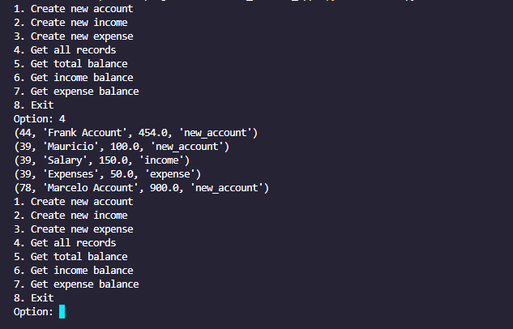
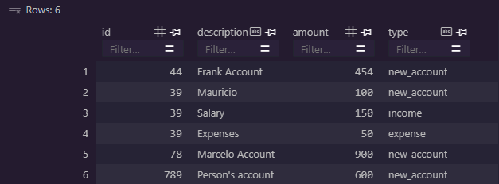
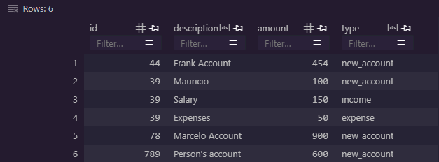
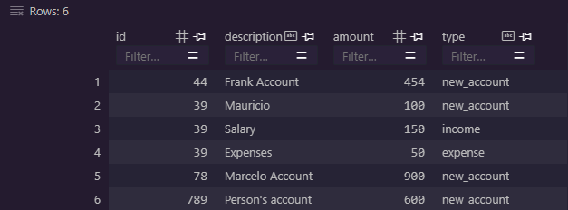

App de flujo de efectivo

 


Descripción
A través de la automatización de procesos, se lleva un registro de los ingresos y egresos de una empresa o una persona, permitiendo tener un control total de la contabilidad de la misma.
Tecnologías utilizadas
- Python
- Pandas
- SQLite
- Pytest
Funcionalidades
- Registro de ingresos
- Registro de egresos
- Registro de moras
- Balance
- Reporte de todos los movimientos
Problemas resueltos
- Llevar la contabilidad manualmente